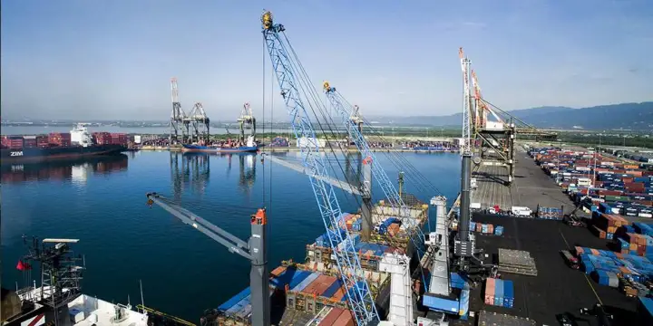
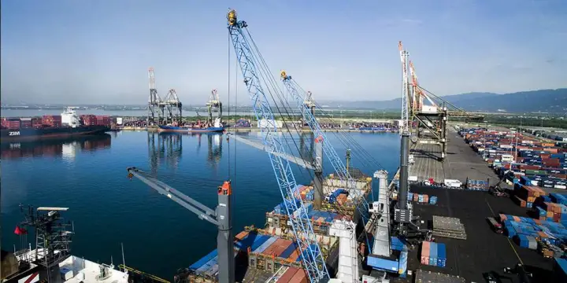

Jamajka je stát, který se nachází na stejnojmenném ostrově ve Velkých Antilách v Karibském moři. Jedná se o největší anglicky mluvící ostrov v Karibiku a třetí největší v regionu.


256 ob. / km²
1,36 dětí
1, 5% celekové populace
Angličtina

 

JAM
7 letišť(2023)
7 500 km
2 300 km